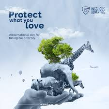
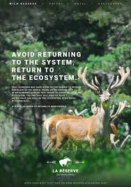

The Threat to Global Biodiversity: What Can Be Done?
Biodiversity is declining at an alarming rate. This article discusses the causes of biodiversity loss and explores what actions we can take to mitigate its effects on ecosystems.
Read MoreBiodiversity is critical for maintaining the balance of ecosystems, food security, and the overall health of our planet. This page explores the key challenges and societal concerns surrounding biodiversity loss.
Biodiversity is declining at an alarming rate. This article discusses the causes of biodiversity loss and explores what actions we can take to mitigate its effects on ecosystems.
Read More
Healthy biodiversity is essential for sustainable agriculture and food security. Learn how the loss of biodiversity is impacting global food systems and what can be done to reverse the trend.
Read MoreFrom clean water to fertile soil, biodiversity plays a crucial role in providing ecosystem services. Explore the importance of these services and how they are at risk due to biodiversity loss.
Read MoreCheck out other biodiversity article right here!
 